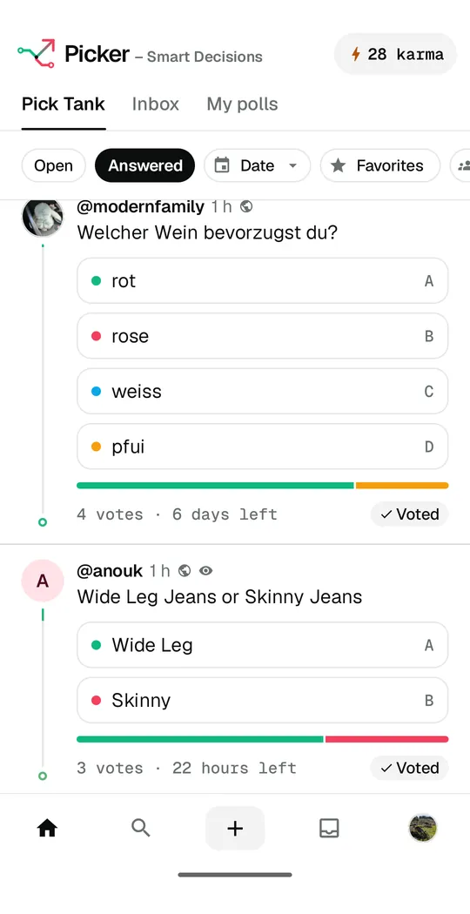
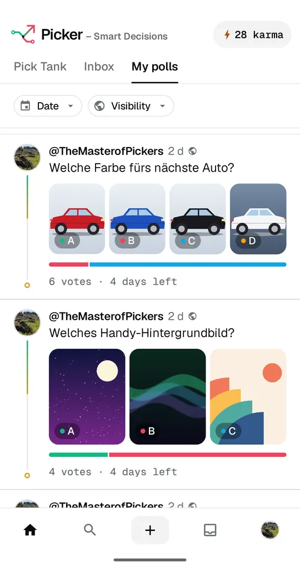
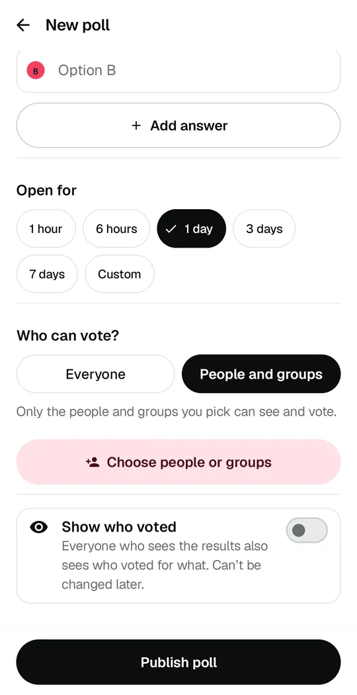
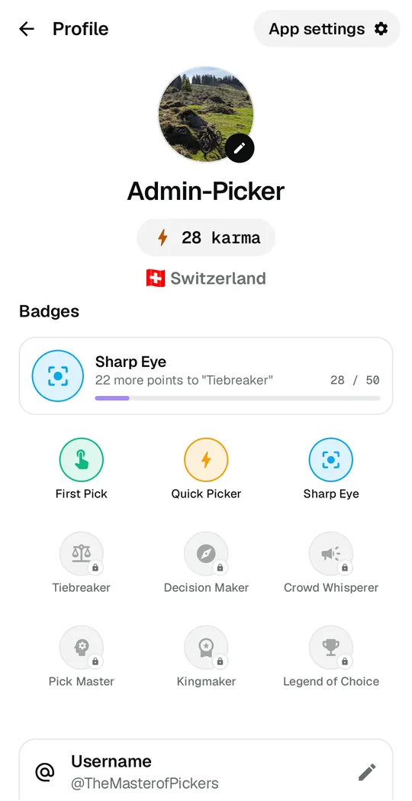

Smart Decisions
Many options. One pick.
Ask the people you trust and get a clear answer in seconds.Frag die Leute, denen du vertraust, und hab in Sekunden eine klare Antwort.Demande aux personnes en qui tu as confiance et obtiens une réponse claire en quelques secondes.Chiedi alle persone di cui ti fidi e ottieni una risposta chiara in pochi secondi.Pregunta a la gente en quien confías y obtén una respuesta clara en segundos.Pergunte às pessoas em quem você confia e tenha uma resposta clara em segundos.
Pizza or sushi tonight?Pizza oder Sushi heute Abend?Pizza ou sushi ce soir?Pizza o sushi stasera?¿Pizza o sushi esta noche?Pizza ou sushi hoje à noite?
Inside the appSo sieht die App ausAperçu de l'appUno sguardo all'appAsí es la appPor dentro do app

Vote in the Pick TankAbstimmen im Pick TankVote dans le Pick TankVota nel Pick TankVota en el Pick TankVote no Pick Tank 
Text or photosText oder BildTexte ou photosTesto o fotoTexto o fotosTexto ou fotos 
People and groupsPersonen und GruppenPersonnes et groupesPersone e gruppiPersonas y gruposPessoas e grupos 
Karma and badgesKarma und AbzeichenKarma et badgesKarma e badgeKarma e insigniasKarma e emblemas
Already have the app? Open it on your phone to continue.Hast du die App schon? Öffne sie auf deinem Handy, um weiterzumachen.Tu as déjà l'app? Ouvre-la sur ton téléphone pour continuer.Hai già l'app? Aprila sul telefono per continuare.¿Ya tienes la app? Ábrela en tu móvil para continuar.Já tem o app? Abra no seu celular para continuar.
Get Picker free for AndroidPicker gratis für AndroidPicker gratuit sur AndroidPicker gratis per AndroidPicker gratis para AndroidPicker grátis para Android


Google Play and the Google Play logo are trademarks of Google LLC.Google Play und das Google Play-Logo sind Marken von Google LLC.Google Play et le logo Google Play sont des marques de Google LLC.Google Play e il logo Google Play sono marchi di Google LLC.Google Play y el logotipo de Google Play son marcas de Google LLC.Google Play e o logotipo do Google Play são marcas da Google LLC.